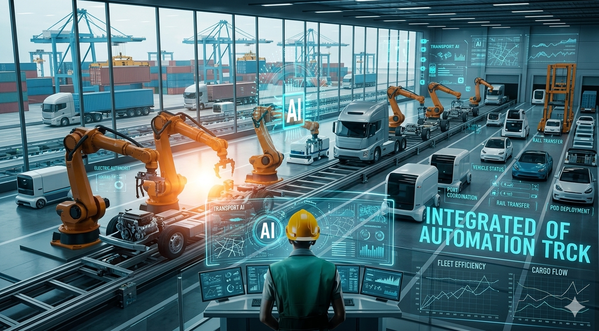

Transport Automation
Transport Automation
Transportation stands at a critical juncture where autonomous vehicles, AI powered routing systems, and delivery robots are shifting from experimental technology to commercial deployment. Unlike manufacturing's factory floors or retail's checkouts, the transportation industry encompasses diverse segments—trucking, passenger vehicles, delivery, maritime, and aviation—each facing unique automation pressures and opportunities. The transformation is already underway, but the reality differs markedly from dystopian headlines.
The Market Explosion
The AI transportation market is experiencing explosive growth. The global market for artificial intelligence in transportation is estimated to be worth $2.11 billion in 2024 and to increase to $6.51 billion by 2031, which is a compound annual growth rate (CAGR) of 17.5% from 2024 to 2031.
The global artificial intelligence in transportation market reached $5.53 billion in 2025. NVIDIA reported its full year automotive revenue increased 21% to $1.1 billion in 2024, driven by AI cockpit and self driving platform adoption.
Autonomous Vehicles: Progress But Not Imminent Mass Displacement
The reality of autonomous vehicles is far more nuanced than most media coverage suggests. According to Statista, there will be almost 58 million self driving cars on the road by 2030. This shows that autonomous driving technology is making a lot of progress and becoming a part of daily life.
However, Autonomous vehicles in 2026 represent a technology at an inflection point. After years of development, the industry has achieved remarkable things—fully driverless robotaxis operating commercially, sophisticated driver assistance in millions of vehicles, and technological capabilities that seemed science fiction a decade ago. Yet significant challenges remain. True Level 5 autonomy—anywhere, anytime, under any condition—may still be years or decades away.
Truck Drivers: The Most Resilient Occupations
Despite decades of headlines predicting their demise, truck drivers face remarkably low automation risk. Heavy and tractor-trailer truck drivers face an overall AI exposure of just 10%—one of the lowest rates among all 500 occupations tracked by AI Changing Work. The automation risk is a mere 10 out of 100, and the core task of driving and delivering cargo has an automation rate of only 5%.
The BLS projects +4% growth through 2034, meaning tens of thousands of new trucking jobs are expected to be created, not eliminated. The disconnect between headlines and reality comes down to several factors:
- The physical world is hard. Unlike software coding or document drafting, driving a 40 ton vehicle through rain, construction zones, narrow city streets, and unpredictable traffic involves physical world complexity that AI struggles to master reliably.
- Loading and unloading. Trucking is not just driving. It involves securing cargo, navigating dock areas, handling paperwork, and communicating with warehouse staff—tasks that require physical dexterity and human interaction.
- Regulatory barriers. Even where autonomous technology works technically, federal and state regulations require human oversight. As of 2026, no state permits fully driverless commercial trucking on all road types.
However, the caveat: The U.S. trucking industry could lose 1.5 million professional driving jobs by 2030 as autonomous vehicles advance. At the same time, automation is expected to reduce operating costs per mile by 38% and cut road safety incidents by 50%. This represents the long term potential, not the immediate threat.
Last Mile Delivery: Robots and Drones
The delivery sector is experiencing the most immediate transformation. The autonomous last mile delivery market is set to grow from USD 28.50 billion in 2025 to USD 163.45 billion by 2033 (24.4% CAGR). Delivery robots will expand from USD 795.6 million in 2025 to USD 3,236.5 million by 2030 (32.4% CAGR). Robots can cut delivery costs by 96%, from about USD 1.60 to USD 0.06.
Real world deployment:
- Starship's 2,700+ robots completed 9 million autonomous deliveries across 7 countries in 2025. Backed by a USD 50 million investment, the company plans to scale to over 12,000 autonomous robots by 2027.
- Wing completed over 500,000 residential deliveries across three continents and plans to expand to an additional 100 Walmart stores by 2026. Both companies already fulfill thousands of deliveries weekly in under 19 minutes, proving drone delivery at scale.
Drone deployment is accelerating: Gartner projects over 1 million drones delivering retail goods by 2026, up from 20,000 today.
Jobs at Direct Risk in Transportation
- Delivery Drivers & Last Mile Couriers - The most immediately threatened segment. Autonomous delivery robots and drones are actively replacing human delivery roles in many markets.
- Warehouse Dispatch & Logistics Coordinators - AI powered route optimization and automated load matching are eliminating manual coordination roles.
- Freight Brokers & Rate Negotiators - AI systems now handle load matching, rate quoting, and appointment scheduling automatically.
- Taxi Drivers (Urban Centers) - Robotaxis like Waymo are already operating commercially in specific cities, reducing demand for traditional taxi drivers.
- Shuttle & Transport Operators - Autonomous shuttles are being deployed in controlled environments like airports and corporate campuses.
The Back Office Transformation
Less visible but equally significant is the automation of transportation administration. One of the most immediate impacts of AI is in freight administration and workflow automation. Modern transportation management systems and digital freight platforms are embedding AI to reduce manual work and speed up decision making. Key areas where AI is already making a difference include automated billing, invoicing, and document processing, rate quoting, load matching, and appointment scheduling.
C.H. Robinson reported using generative AI agents to complete more than three million shipping related tasks, eliminating repetitive manual work and allowing employees to focus on higher value activities. This represents thousands of white collar jobs being transformed or eliminated.
Smart Traffic & Congestion Management
AI is reshaping urban transportation at scale. AI enhances mobility efficiency through smart traffic control, reducing congestion by up to 25 percent in major cities. AI driven route optimization boosts fuel efficiency by up to 15 percent, saving time and reducing emissions for fleets.
These systems reduce the need for traditional traffic management and route planning staff.
Safety Benefits: The Silver Lining
Automation brings measurable safety improvements. Autonomous and AI assisted systems improve road safety, reducing accident risks by 20–30 percent through real time monitoring. For fleets: For fleets, each USD 1 invested in ADAS yields about USD 5.09 in measurable savings from fewer crashes and higher uptime, with front to rear collisions reduced by 49% in real world use.
Emerging Jobs in Transportation
As traditional roles disappear, new ones are emerging. Autonomous vehicles, drone delivery, and AI logistics routing are maturing quickly. Fleet managers, safety supervisors, and AI route planners are emerging roles.
New transportation sector roles include:
- Autonomous fleet operators and supervisors
- Logistics AI specialists
- Autonomous vehicle technicians
- Drone delivery coordinators
- Route optimization engineers
- Fleet data analysts
- Vehicle maintenance specialists for autonomous systems
- Safety and compliance officers for autonomous systems
Advanced Driver Assistance Systems (ADAS): The Near Term Reality
Rather than full autonomy, the near term transformation involves AI assisted driving. The ADAS market is set to expand from USD 33.9 billion in 2024 to USD 40.78 billion in 2026 and USD 107.11 billion by 2035, indicating a 260% increase in under a decade. By Q1 2025, over two thirds of vehicles sold in Europe included ADAS under the EU General Safety Regulation.
This represents gradual transformation rather than overnight displacement. Drivers will assist systems rather than being replaced by them, at least in the near term.
Waymo and Commercial Robotaxis
Waymo represents the closest thing to fully operational autonomous transportation at scale. Waymo's autonomous vehicles, for example, have logged over 267 million autonomous miles as of the end of 2025. McKinsey projects approximately 15% of new cars will be fully autonomous by 2030.
However, this represents a small fraction of total vehicles and is primarily concentrated in specific cities with favorable conditions.
The Liability Challenge: A Major Barrier
Unclear liability frameworks are slowing deployment. Liability for autonomous vehicle crashes remains legally unclear as of 2025. Potential liable parties include the vehicle manufacturer (if hardware defect caused the crash), the software developer (if algorithmic error or bug contributed), the fleet operator (if maintenance or deployment issues played a role), or potentially the passenger if they improperly interfered with the system. Traditional insurance frameworks assign fault to drivers, but autonomous systems don't fit this model. No uniform national standard exists.
The Supporting Ecosystem: The Hidden Opportunity
Beyond vehicles themselves, significant investment is flowing into supporting infrastructure. Consultants and investors are now focusing beyond the vehicles themselves, looking at the "plumbing" needed to support autonomy, including fleet management systems, maintenance networks, and service infrastructure. As autonomous technology becomes more practical, the supporting ecosystem is attracting increased attention and investment. This creates new job opportunities in systems integration, data management, and infrastructure development.
Adoption Reality: Gradual, Not Revolutionary
According to DAT Freight & Analytics' 2026 Freight Focus report, 2025 marked a major turning point for technology adoption. AI, automation, and advanced data tools moved from early experimentation into real world deployment. In 2026, companies that use these tools effectively are expected to gain a competitive advantage, while those that hesitate risk falling behind. Across trucking, AI is no longer optional. In 2026, it is becoming a foundational tool that connects operations, security, maintenance, and future mobility into a more data driven and resilient industry.
The Critical Distinction
By 2026, automation will be less about machines replacing people and more about machines co working with people to handle the mundane. The jobs listed here aren't "doomed"—they're simply evolving. Automation will reshape the workforce at every level.
Bottom Line for Transportation Workers
Transportation automation is happening faster in some segments (last mile delivery, logistics administration) and slower in others (trucking, urban driving). The narrative of imminent mass displacement of truck drivers remains largely hype. However, workers in back office operations, delivery, and dispatch face genuine displacement pressures requiring immediate upskilling.
The future isn't full autonomy everywhere by 2030. It's:
- Autonomous delivery robots in controlled urban environments
- AI assisted (not autonomous) commercial trucking on highways
- Robotaxis in specific favorable cities
- Massive back office automation in logistics
- Gradual ADAS adoption increasing driver assistance
Workers who embrace AI tools, move into fleet management, logistics optimization, and autonomous systems oversight will thrive. Those who resist or depend on repetitive route planning and simple delivery work face significant risk.